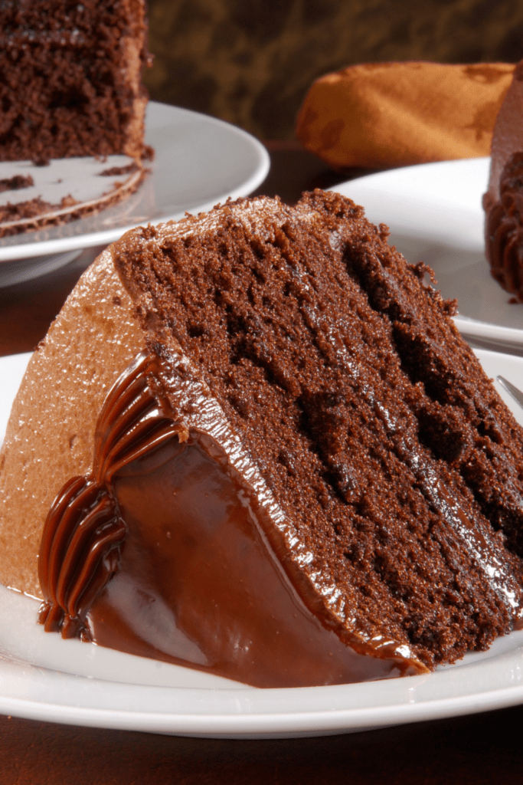

Chocolate Cake

Portillo's Copycat Chocolate Cake
This copycat recipie of the Portillo's Chocolate Cake is incredible!
I never thought I could get such a delicious cake from my own oven!
Ingredients
- 1 box of Betty Crocker Devil's Food Cake Mix
- 3 eggs
- 1 cup ice-cold water
- 1 cup mayonnaise
- 2 cans of Betty Crocker chocolate frosting
Steps
- Preheat your oven to 350 degrees Fahrenheit. Grease (2) 9-inch round cake pans.
- In a large bowl, add cake mix, eggs, water, and mayonnaise. Mix on low speed for 30 seconds. Increase speed to high and mix for 5 minutes.
- Pour the batter evenly over the two cake pans.
- Bake for 30 to 32 minutes. Check for doneness using a toothpick. Insert a toothpick in the middle of the cake – if it comes out clean, it’s time to get it out of the oven.
- Let the cakes rest for 5 minutes, then remove them from the pans. Let them cool on a wiring rack for an hour.
- Place one cake on a plate and spread frosting on top. Top it with the other cake and coat the top and sides with the rest of the frosting. Decorate the cake as desired. Enjoy!